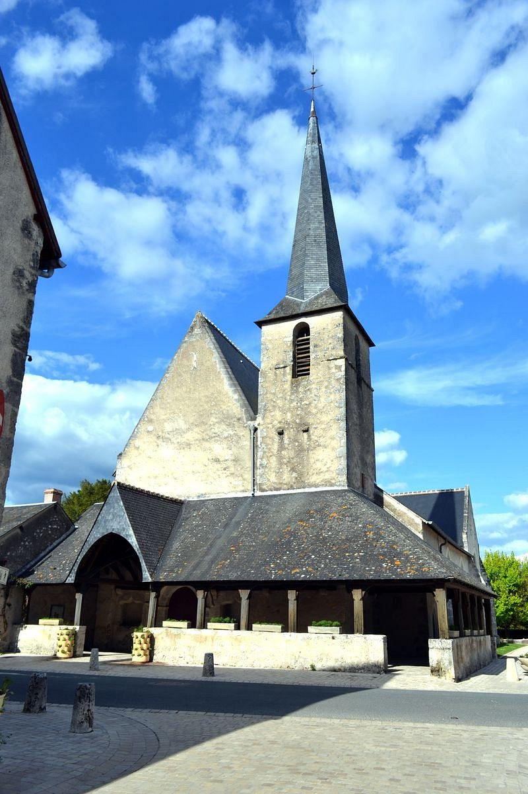
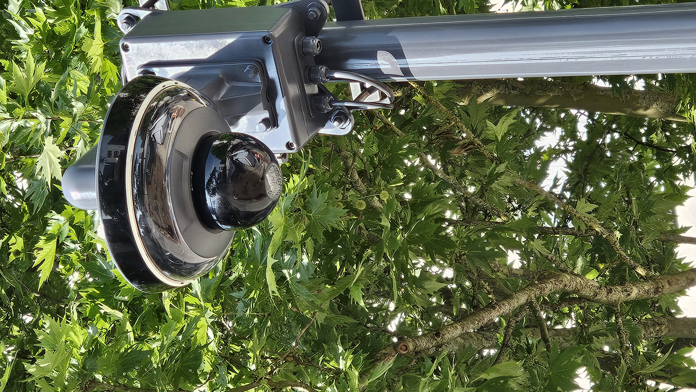

Expériences en entreprise.
Deux stages effectués dans le cadre du BTS SIO SISR, avec des missions concrètes en environnement professionnel.
Présentation de l'entreprise
Phileas Technologie est une entreprise spécialisée dans la sécurité résidentielle et les infrastructures réseau
// Missions réalisées

Installation sono — Église de Cheverny
Déploiement et mise en service d'un système de sonorisation dans l'église de Cheverny : câblage, placement des enceintes, réglage et tests de la chaîne audio complète.

Système de vidéosurveillance
Diagnostic et réparation de caméras défaillantes, puis déploiement de nouvelles unités : pose, raccordement réseau, alimentation et vérification du flux vidéo.
Mise en place d'équipements
Participation à diverses installations techniques chez des clients : montage, raccordement et configuration d'équipements audiovisuels et de sécurité sur site.
Présentation de l'entreprise
Antartic est une une entreprise industrielle spécialisée dans la production de boissons non alcoolisées
// Missions réalisées
Documentation utilisateur
Rédaction de guides et procédures à destination des utilisateurs finaux pour faciliter l'utilisation des outils internes et réduire les sollicitations au support technique.
Sauvegarde des postes de production
Mise en place d'une solution de sauvegarde des disques durs sur les postes des lignes de siroperie : configuration, vérification des restaurations et documentation du processus.
Automatisation des drivers HP & Dell
Développement d'un script PowerShell d'automatisation du déploiement des drivers HP et Dell. Le script détecte le modèle de la machine et installe les drivers correspondants automatiquement, éliminant une tâche manuelle chronophage pour l'équipe IT.